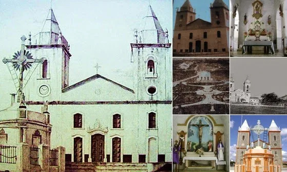
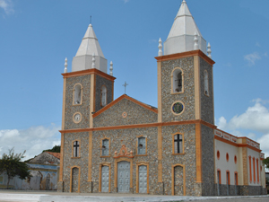
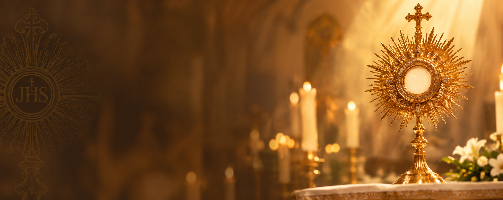
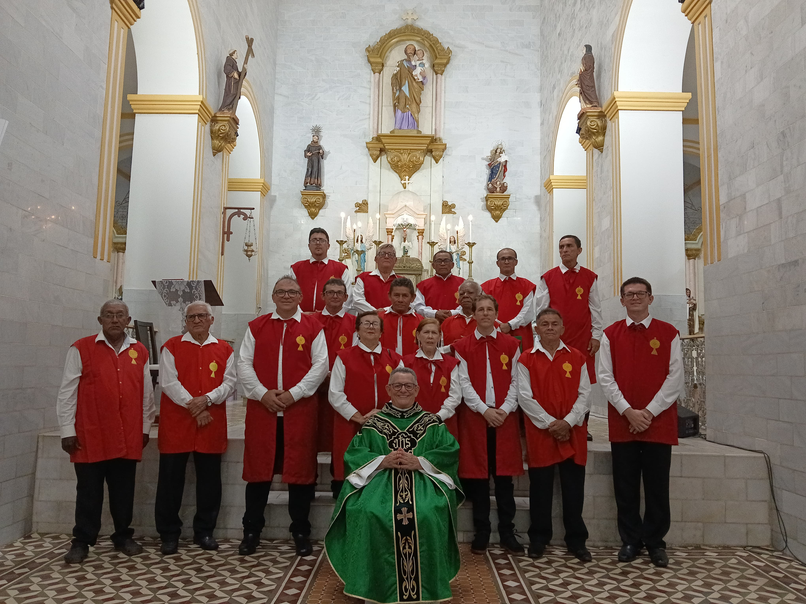

Irmandade do
Santíssimo
Sacramento
◆
IGREJA MATRIZ DE SÃO JOSÉ
GRANJA - CE
FÉ
◆DEVOÇÃO
◆TRADIÇÃO
"Louvado seja para sempre o Santísso Sacramento do Altar"
IGREJA MATRIZ DE SÃO JOSÉ
GRANJA - CE
FÉ
◆DEVOÇÃO
◆TRADIÇÃO
"Louvado seja para sempre o Santísso Sacramento do Altar"
1759
Fundação da Irmandade
09 de setembro
1854
Aprovação do Compromisso
Lei n° 691, de 29 de outubro
1917
Aprovação do novo Compromisso
e reorganização da Irmandade
08 de dezembro
1944
Reforma do Compromisso
Decreto 147 do Concilio Plenário
Brasileiro, aprovado em 20 de maio
HOJE
Continuidade da missão e da
devoção ao Santíssimo Sacramento


A Irmandade do Santíssimo Sacramento da Igreja Matriz de São José, em Granja, possui uma tradição centenária dedicada ao culto e à adoração de Nosso Senhor Jesus Cristo presente na Eucaristia.
Sua fundação ocorreu em 9 de setembro de 1759, na então Igreja Matriz de São José da Macaboqueira, sendo uma das mais antigas associações religiosas da região. Os primeiros registros documentam a eleição de seus dirigentes e a organização dos irmãos para promover a honra e o louvor ao Santíssimo Sacramento
Ao longo de sua história, a irmandade teve seu compromisso aprovado pela Lei nº 691, de 29 de outubro de 1854. Posteriormente, foi reorganizada em 8 de dezembro de 1917 e teve seu compromisso reformado em 1944, adaptando-se às orientações da Igreja e preservando sua missão original.
Até os dias atuais, a irmandade continua promovendo a devoção à Divina Eucaristia e contribuindo para a vida religiosa da Paróquia de São José de Granja.

Promover a piedade e a devoção à Divina Eucaristia e manter com máxima decência o seu culto.
Preservar a tradição da irmandade.
Servir à Igreja e à comunidade.
Fortalecer a fé dos irmãos.
Promover e perpetuar o culto ao Santíssimo
Sacramento através da adoração e veneração.Cultivar laços de união e caridade entre os membros da nossa comunidade.
Profissão de fé que resume as verdades fundamentais da Igreja.
